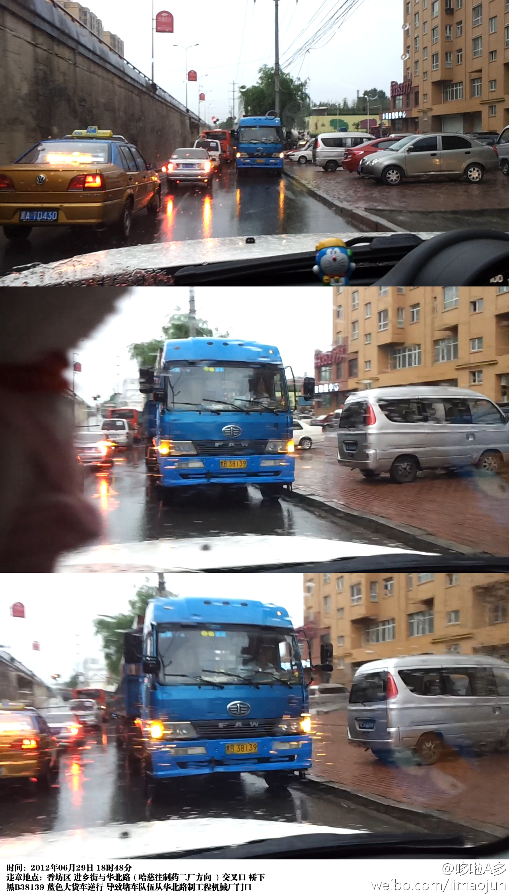
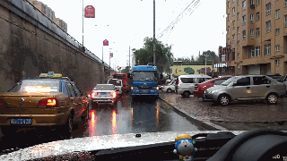

对@平安哈尔滨 说：时间：2012年06月29日 18时48分 违章地点：香坊区 进乡街与华北路（哈慈往制药二厂方向 ）交叉口 桥下 黑B38139 蓝色大货车逆行 导致堵车队伍从华北路制工程机械厂门口 
黑B38139,你说我这要是撞上你，你是不是得全责？你就不能长点儿心，开个大车也太肆无忌惮了！你不要命，我们还要命呢，就因为你，堵车堵了得有500米！@平安哈尔滨 我这还有大图，如果要处理，我可以提供。2012年6月29日 晚上6点48分。 